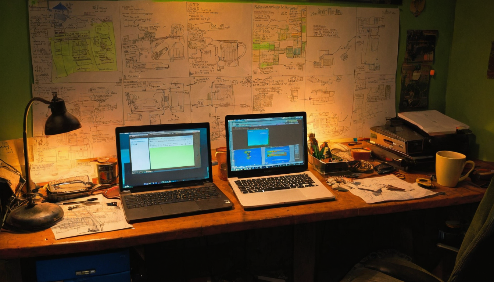

I stopped scrolling on this one because it is a debate I have seen come back around in Chia circles for years, just wearing a slightly different outfit each time. Someone brings up the prefarm, someone calls it FUD, and someone else says the opposite is actually the bullish case. That loop is worth paying attention to, because it says a lot about how a young chain thinks about its own treasury.
@Ashen_R0 replied to a thread involving @bytesandblocks and @LoganSt66279467 making a specific argument: people overlook that selling the prefarm now means there is less of it left to sell later. The reply pushes back on the recurring complaint that the team is dumping prefarm coins just to keep operations funded, framing that as exactly what a prefarm is supposed to be used for in the first place. The post argues it is better for that supply to move now, before more retail buyers show up, and ends with the author saying he is buying more XCH. There are no external links in the post, just a reply in an ongoing conversation.
Every serious crypto project that launched with a premine or founder reserve eventually has this exact conversation. Chia is no different. The prefarm exists to fund development, farming incentives, and company operations in the early years when there is no other revenue coming in. How a community talks about that reserve, whether it treats it as a hidden threat or an accepted part of the design, says something about how mature the conversation around the project has gotten. This is less about XCH price and more about how a community reasons through supply and trust over time.
What the prefarm actually is: a portion of XCH reserved at genesis for Chia Network Inc to fund operations, distinct from the coins farmers earn through normal block rewards.
The FUD version of the argument: that ongoing prefarm sales are a sign the company needs cash to survive, which some read as a red flag.
The counter-argument in this post: that spending down the reserve now, while the ecosystem is still small, means less overhang sitting on the sidelines later once more retail participants show up. Less supply left to sell later is framed as a good thing, not a bad one.
What still needs work: none of this is something outsiders can verify from a single reply. How much of the prefarm remains, how fast it is moving, and what it funds are all separate questions that need their own sourcing, not a tweet thread.
What I would test first: honestly, this is more of a 'go look at the public data yourself' situation than a build-something situation. Anyone curious should check Chia's own treasury disclosures rather than take either side of a reply thread at face value.
I like seeing this conversation happen out in the open instead of in private Discords, because prefarm questions are fair questions and Chia has never hidden the ball on it. @Ashen_R0's framing is one I have some sympathy for: a treasury that gets used early to build the thing is doing its job, and a shrinking overhang is generally healthier than a growing one. I will say the 'before retail comes in' framing is the one part I would not lean on too hard, since none of us can actually call market timing like that. But the core point, that prefarm spending funds real work rather than sitting there as a threat, lines up with how I have always understood the design.
Worth keeping an eye on official Chia Network treasury updates if they get published, and on how this same argument evolves as the remaining prefarm balance shrinks. If the FUD quiets down as the reserve gets smaller, that tells you something. If it does not, that is worth noticing too.
Source: X post by @Ashen_R0, https://x.com/i/web/status/2077490017090306281, retrieved on 2026-07-15. No external references were included in the post.